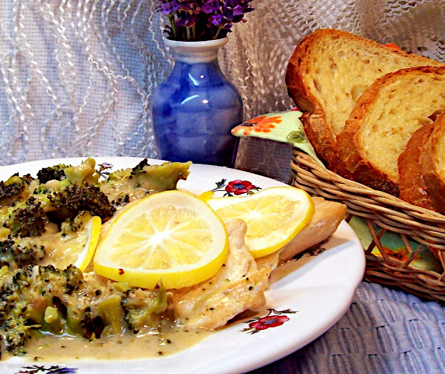

Lemon Broccoli Chicken

Description
So easy with trimmed chicken breast, lemons, canned soup and fresh broccoli.
This shit is the tits
Ingredients
- 2 lemons
- 4 teaspoons olive oil
- 4 halves boneless chicken breast
- 2 cups condensed cream of broccoli soup
- 1/4 cup milk
- 1 dash pepper
- 8 oz broccoli
Steps
- Cut 2 thin lemon slices from the center of the lemons for each chicken breast half. Squeeze juice from the remaining ends into a small bowl. Set aside.
- Pour oil into a skillet, add chicken and cook over medium heat for 10 minutes. Remove chicken from skillet and set aside.
- In skillet, combine soup, milk, lemon juice and pepper. Heat over medium-high until boiling. Chop broccoli and add to skillet. Reduce heat to medium-low.
- Return chicken to skillet, topp with lemon slices, cover and cook over low heat 5 to 7 minutes or until chicken is no longer pink in the center. Stir often.
- Transfer chicken to a serving platter. Pour soup and broccoli over the top and serve.